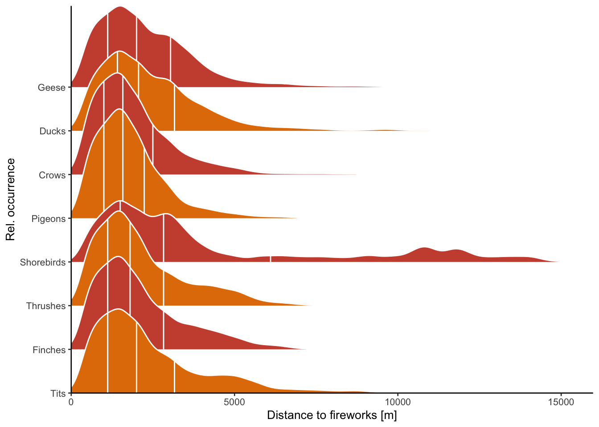

14 Figure 4: Distance to fireworks
Finally, we also want to visualize how far away from fireworks birds are located. As we calculate them from a raster, when birds are close to fireworks, distances are increasing in discrete steps, whereas when they’re further away it becomes more continuous (more possible distances with more grid points). As this makes for an ugly plot, we stick to a good ol’ donutchart to visualize the changing distributions of birds relative to fireworks.
14.1 Processing environment
library(ggplot2)
library(dplyr)
library(tidyr)
library(tibble)
library(ggpubr)
library(forcats)
library(stringr)
library(broom)
library(patchwork)
library(ggridges)
library(ggpointdensity)
data_cleaned <- readRDS("data/models/data_cleaned.RDS")
baseline_ppis <- readRDS("data/processed/baseline_ppis.RDS")
baseline_all <- bind_rows(baseline_ppis)
data_all <- readRDS("data/processed/composite-ppis/500m/201712312305.RDS")$data@data %>%
dplyr::select("pixel", "wb_area_nr", "ptt_route", "wb_total_birds", "ptt_total_birds", "total_birds", "weighted_mean_crs") %>%
rename(mean_rcs = weighted_mean_crs)
data_cleaned %>%
left_join(data_all, by = "pixel") -> data_cleaned
wb_props <- readRDS("data/processed/sovon/wb_props.RDS") %>%
dplyr::select("area_nr", "Geese", "Ducks", "Crows", "Pigeons", "Waders", "Thrushes", "Finches", "Tits")
ptt_props <- readRDS("data/processed/sovon/ptt_props.RDS") %>%
dplyr::select("route", "Geese", "Ducks", "Crows", "Pigeons", "Waders", "Thrushes", "Finches", "Tits")
data_cleaned %>%
left_join(wb_props, by = c("wb_area_nr" = "area_nr")) %>%
left_join(ptt_props, by = c("ptt_route" = "route")) %>%
rowwise() %>%
mutate(Geese = mean(c(Geese.x, Geese.y), na.rm = TRUE),
Ducks = mean(c(Ducks.x, Ducks.y), na.rm = TRUE),
Crows = mean(c(Crows.x, Crows.y), na.rm = TRUE),
Pigeons = mean(c(Pigeons.x, Pigeons.y), na.rm = TRUE),
Waders = mean(c(Waders.x, Waders.y), na.rm = TRUE),
Thrushes = mean(c(Thrushes.x, Thrushes.y), na.rm = TRUE),
Finches = mean(c(Finches.x, Finches.y), na.rm = TRUE),
Tits = mean(c(Tits.x, Tits.y), na.rm = TRUE)) %>%
ungroup() %>%
mutate(VIDc = (10^VIR) / mean_rcs,
VIDc = if_else(VIDc > 10000000, 1e-6, VIDc, 1e-6)) %>%
dplyr::select(-c("Geese.x", "Geese.y", "Ducks.x", "Ducks.y", "Crows.x", "Crows.y", "Pigeons.x", "Pigeons.y",
"Waders.x", "Waders.y", "Thrushes.x", "Thrushes.y", "Finches.x", "Finches.y", "Tits.x", "Tits.y")) -> data_cleaned
prop_classes <- c("Geese", "Ducks", "Crows", "Pigeons", "Waders", "Thrushes", "Finches", "Tits")
data_cleaned["domprop"] <- names(data_cleaned)[which(names(data_cleaned) %in% prop_classes)][max.col(data_cleaned[prop_classes], "first")]
landuse_classes <- c("agricultural", "semiopen", "forests", "wetlands", "waterbodies")
data_cleaned["domclass"] <- names(data_cleaned)[which(names(data_cleaned) %in% landuse_classes)][max.col(data_cleaned[landuse_classes], "first")]
data_cleaned$VIR[data_cleaned$VIR < -1] <- -1
baseline_all %>%
mutate(VIR = 10^VIR,
prop_flight = VIR / total_rcs,
VIR = log10(VIR)) %>%
identity() -> baseline_all
readRDS("data/processed/sovon/ptt_props.RDS") %>%
dplyr::select(total_birds, route) %>%
filter(total_birds > 0) %>%
left_join(dplyr::select(data_cleaned, ptt_route, dist_urban), by = c("route" = "ptt_route")) %>%
drop_na() %>%
distinct(route, total_birds, dist_urban, .keep_all = TRUE) %>%
uncount(total_birds) %>%
# slice_sample(n = 2000000) %>%
mutate(family = "All") %>%
dplyr::select(family, dist_urban) %>%
identity() -> ptt_all
readRDS("data/processed/sovon/wb_props.RDS") %>%
dplyr::select(total_birds, area_nr) %>%
filter(total_birds > 0) %>%
left_join(dplyr::select(data_cleaned, wb_area_nr, dist_urban), by = c("area_nr" = "wb_area_nr")) %>%
drop_na() %>%
distinct(area_nr, total_birds, dist_urban, .keep_all = TRUE) %>%
uncount(total_birds) %>%
# slice_sample(n = 2000000) %>%
mutate(family = "All") %>%
dplyr::select(family, dist_urban) %>%
identity() -> wb_all
wb_all %>%
bind_rows(ptt_all) -> all
a <- ecdf(all$dist_urban)
a(2500)## [1] 0.6208102
a(5000)## [1] 0.8943964
prop_classes <- c("Geese", "Ducks", "Crows", "Pigeons", "Shorebirds", "Thrushes", "Finches", "Tits", "All")
wb <- readRDS("data/processed/sovon/wb_props.RDS") %>%
dplyr::select(total_birds, area_nr, Geese, Ducks, Crows, Pigeons, Shorebirds = Waders, Thrushes, Finches, Tits) %>%
pivot_longer(cols = Geese:Tits, names_to = "family", values_to = "prop_family") %>%
mutate(birds = round(total_birds * prop_family),
family = fct_relevel(as.factor(family), rev(prop_classes))) %>%
filter(birds > 0) %>%
left_join(dplyr::select(data_cleaned, wb_area_nr, dist_urban), by = c("area_nr" = "wb_area_nr")) %>%
drop_na() %>%
distinct(area_nr, family, dist_urban, .keep_all = TRUE) %>%
uncount(birds) %>%
slice_sample(n = 1000000) %>%
dplyr::select(family, dist_urban) %>%
identity()## Warning: Unknown levels in `f`: All
ptt <- readRDS("data/processed/sovon/ptt_props.RDS") %>%
dplyr::select(total_birds, route, Geese, Ducks, Crows, Pigeons, Shorebirds = Waders, Thrushes, Finches, Tits) %>%
pivot_longer(cols = Geese:Tits, names_to = "family", values_to = "prop_family") %>%
mutate(birds = round(total_birds * prop_family),
family = fct_relevel(as.factor(family), rev(prop_classes))) %>%
filter(birds > 0) %>%
left_join(dplyr::select(data_cleaned, ptt_route, dist_urban), by = c("route" = "ptt_route")) %>%
drop_na() %>%
distinct(route, family, dist_urban, .keep_all = TRUE) %>%
uncount(birds) %>%
slice_sample(n = 1000000) %>%
dplyr::select(family, dist_urban) %>%
identity()## Warning: Unknown levels in `f`: All
wb %>%
bind_rows(ptt) %>%
mutate(family = fct_relevel(as.factor(family), rev(prop_classes))) %>%
ggplot() +
geom_density_ridges(aes(x = dist_urban, y = family, fill = family), scale = 2.5, bandwidth = 275, rel_min_height = 0.005, color = "#ffffff", quantile_lines = TRUE, quantiles = 4) +
scale_x_continuous(limits = c(0, max(data_cleaned$dist_urban)), breaks = c(0, 5000, 10000, 15000)) +
scale_y_discrete(position = "left") +
scale_fill_cyclical(values = c("#E17C05", "#CC503E")) +
coord_cartesian(expand = FALSE) +
theme_classic(base_size = 10) +
theme(legend.position = "none") +
labs(x = "Distance to fireworks [m]", y = "Rel. occurrence") %>%
identity() -> p_bird_families## Warning: Unknown levels in `f`: All
p_bird_families
data_cleaned %>%
dplyr::select(agricultural:urban, domclass, dist_urban) %>%
pivot_longer(cols = -c(domclass, dist_urban)) %>%
filter(domclass == name) %>%
ggplot(aes(x = dist_urban, y = fct_reorder(domclass, dist_urban, .fun = median, .desc = TRUE),
fill = domclass)) +
# geom_stream() +
geom_density_ridges(scale = 4, rel_min_height = .005, color = "#ffffff", quantile_lines = TRUE, quantiles = 4) +
scale_fill_manual(values = c("#73AF48", "#0F8554", "#EDAD08", "#1D6996", "#38A6A5")) +
scale_color_manual(values = c("#73AF48", "#0F8554", "#EDAD08", "#1D6996", "#38A6A5")) +
scale_x_continuous(limits = c(0, max(data_cleaned$dist_urban)), breaks = c(0, 5000, 10000, 15000)) +
scale_y_discrete(position = "left", labels = function(x) stringr::str_to_sentence(x)) +
coord_cartesian(expand = FALSE) +
theme_classic(base_size = 10) +
theme(legend.position = "none") +
labs(x = "Distance to fireworks [m]", y = "Rel. occurrence") -> p_landuse
p_landuse## Picking joint bandwidth of 389
disturbance_baseline <- readRDS("data/processed/disturbance_baseline.RDS")
min_VID <- 0.01
bppi <- lapply(baseline_ppis, function(x) {
x %>%
# mutate(VIDc = if_else(VIDc < min_VID, min_VID, VIDc, min_VID)) %>%
identity()
})
set.seed(42)
db <- bind_rows(bppi)
disturbance_baseline <- mean(bind_rows(bppi)$VIDc, trim = 0.05)
alpha_baseline <- 0.5
alpha_ribbon <- 0.3
color_normal <- "blue"
color_disturbed <- "red"
scientific_10 <- function(x) {
parse(text = str_replace(gsub("e", " %*% 10^", scales::scientific_format()(x)), "\\+", ""))
}
data_cleaned %>%
# mutate(VIDc = if_else(VIDc < min_VID, min_VID, VIDc, min_VID)) %>%
identity() %>%
ggplot() +
# geom_pointdensity(aes(x = dist_urban, y = VIDc, size = total_rcs), alpha = 0.05, adjust = 2.5, method = "default") +
geom_point(aes(x = dist_urban, y = VIDc), data = . %>% sample_frac(1/5), alpha = 0.05, color = color_disturbed) +
# geom_pointdensity(aes(x = dist_urban, y = VIR, size = total_rcs), alpha = 0.05) +
# geom_point(aes(x = dist_urban, y = VIR, size = total_rcs), color = "gray80", shape = 20, alpha = 0.2,
# data = data_cleaned %>% slice_sample(n = 10000)) +
# geom_point(aes(x = dist_urban, y = VIR, size = total_rcs), color = "indianred2", alpha = 0.05,
# data = data_cleaned %>% slice_sample(n = 10000)) +
# stat_density_2d(aes(x = dist_urban, y = VIR, color = after_stat(density)), geom = "point",
# contour = FALSE, data = data_cleaned, n = 100) +
# geom_density_2d(aes(x = dist_urban, y = VIR, color = domclass), data = data_cleaned) +
# geom_density_2d_filled(aes(x = dist_urban, y = VIR), data = data_cleaned) +
# Horizontal lines
# geom_hline(yintercept = disturbance_baseline, color = "blue", linetype = "dashed") +
# geom_hline(yintercept = mean(data_cleaned$VIDc, trim = 0.25), color = "red", linetype = "dashed") +
# Smooths Undisturbed
geom_point(aes(x = dist_urban, y = VIDc), data = db %>% dplyr::sample_frac(1/(5*length(bppi))),
color = color_normal, alpha = 0.05) +
geom_ribbon(aes(x = dist_urban, y = VIDc), data = bppi[[1]], method = "gam", stat = "smooth",
fill = color_normal, alpha = alpha_ribbon, color = "white", size = 0.2) +
geom_line(aes(x = dist_urban, y = VIDc), data = bppi[[1]], method = "gam", stat = "smooth", color = color_normal,
alpha = 1) +
geom_ribbon(aes(x = dist_urban, y = VIDc), data = bppi[[2]], method = "gam", stat = "smooth",
fill = color_normal, alpha = alpha_ribbon, color = "white", size = 0.2) +
geom_line(aes(x = dist_urban, y = VIDc), data = bppi[[2]], method = "gam", stat = "smooth", color = color_normal,
alpha = 1) +
geom_ribbon(aes(x = dist_urban, y = VIDc), data = bppi[[3]], method = "gam", stat = "smooth",
fill = color_normal, alpha = alpha_ribbon, color = "white", size = 0.2) +
geom_line(aes(x = dist_urban, y = VIDc), data = bppi[[3]], method = "gam", stat = "smooth", color = color_normal,
alpha = 1) +
geom_ribbon(aes(x = dist_urban, y = VIDc), data = bppi[[4]], method = "gam", stat = "smooth",
fill = color_normal, alpha = alpha_ribbon, color = "white", size = 0.2) +
geom_line(aes(x = dist_urban, y = VIDc), data = bppi[[4]], method = "gam", stat = "smooth", color = color_normal,
alpha = 1) +
geom_ribbon(aes(x = dist_urban, y = VIDc), data = bppi[[5]], method = "gam", stat = "smooth",
fill = color_normal, alpha = alpha_ribbon, color = "white", size = 0.2) +
geom_line(aes(x = dist_urban, y = VIDc), data = bppi[[5]], method = "gam", stat = "smooth", color = color_normal,
alpha = 1) +
# annotate("text", x = 14500, y = disturbance_baseline - 0.4, label = "Normal nights", hjust = 1, color = "blue", fontface = "bold") +
# Smooths disturbed
geom_ribbon(aes(x = dist_urban, y = VIDc), method = "gam", stat = "smooth", fill = color_disturbed, alpha = 0.2,
color = "white", size = 0.4) +
geom_line(aes(x = dist_urban, y = VIDc), method = "gam", stat = "smooth", color = color_disturbed, alpha = 1) +
# annotate("text", x = 15500, y = mean(data_cleaned$VIDc) + 0.4, label = "NYE", hjust = 1, color = "red", fontface = "bold") +
scale_color_viridis_c(option = "inferno") +
scale_y_continuous(trans = "log10", breaks = c(0.0001, 0.001, 0.01, 0.1, 1, 10, 100, 1000, 10000),
labels = c("0.0001", "0.001", "0.01", "0.1", "1", "10", "100", "1000", "10000")) +
# scale_y_continuous(trans = scales::pseudo_log_trans(base = 10), labels = function(x) {10^x}, breaks = c(-1, 0, 1, 2, 3, 4, 5, 6)) +
# scale_y_continuous(labels = function(x) {10^x}, breaks = c(-1, 0, 1, 2, 3, 4, 5, 6)) +
scale_x_continuous(breaks = c(0, 5000, 10000, 15000), labels = c(0, 5000, 10000, 15000), expand = c(0, 0), limits = c(0, NA)) +
# scale_size_continuous(breaks = c(10, 100, 1000, 10000, 100000), labels = scientific_10) +
scale_size_continuous(breaks = c(100, 10000, 100000), labels = scales::label_number()) +
theme_classic(base_size = 10) +
# labs(x = "Distance to residential area [m]", y = expression(~Birds~"in"~flight~~"[individuals"~km^{-2}~"]")) +
labs(x = "Distance to fireworks [m]", y = expression("Birds in flight"~~group("[", individuals~km^{-2}, "]"))) +
guides(color = guide_colorbar("Density"),
size = guide_legend(title = expression(Total~RCS~~group("[", cm^2, "]")))) +
coord_cartesian(ylim = c(0.90e-4, 1e4)) +
theme(legend.position = "right") -> p_response
p_response## `geom_smooth()` using formula 'y ~ s(x, bs = "cs")'
## `geom_smooth()` using formula 'y ~ s(x, bs = "cs")'
## `geom_smooth()` using formula 'y ~ s(x, bs = "cs")'
## `geom_smooth()` using formula 'y ~ s(x, bs = "cs")'
## `geom_smooth()` using formula 'y ~ s(x, bs = "cs")'
## `geom_smooth()` using formula 'y ~ s(x, bs = "cs")'
## `geom_smooth()` using formula 'y ~ s(x, bs = "cs")'
## `geom_smooth()` using formula 'y ~ s(x, bs = "cs")'
## `geom_smooth()` using formula 'y ~ s(x, bs = "cs")'
## `geom_smooth()` using formula 'y ~ s(x, bs = "cs")'
## `geom_smooth()` using formula 'y ~ s(x, bs = "cs")'
## `geom_smooth()` using formula 'y ~ s(x, bs = "cs")'
(p_landuse / p_response / p_bird_families +
plot_layout(heights = c(1.5, 2.5, 1.5), guides = "collect"))## Picking joint bandwidth of 389## `geom_smooth()` using formula 'y ~ s(x, bs = "cs")'
## `geom_smooth()` using formula 'y ~ s(x, bs = "cs")'
## `geom_smooth()` using formula 'y ~ s(x, bs = "cs")'
## `geom_smooth()` using formula 'y ~ s(x, bs = "cs")'
## `geom_smooth()` using formula 'y ~ s(x, bs = "cs")'
## `geom_smooth()` using formula 'y ~ s(x, bs = "cs")'
## `geom_smooth()` using formula 'y ~ s(x, bs = "cs")'
## `geom_smooth()` using formula 'y ~ s(x, bs = "cs")'
## `geom_smooth()` using formula 'y ~ s(x, bs = "cs")'
## `geom_smooth()` using formula 'y ~ s(x, bs = "cs")'
## `geom_smooth()` using formula 'y ~ s(x, bs = "cs")'
## `geom_smooth()` using formula 'y ~ s(x, bs = "cs")'
ggsave("data/plots/distance_effect_absolute.pdf", width = 7, height = 7)## Picking joint bandwidth of 389
## `geom_smooth()` using formula 'y ~ s(x, bs = "cs")'
## `geom_smooth()` using formula 'y ~ s(x, bs = "cs")'
## `geom_smooth()` using formula 'y ~ s(x, bs = "cs")'
## `geom_smooth()` using formula 'y ~ s(x, bs = "cs")'
## `geom_smooth()` using formula 'y ~ s(x, bs = "cs")'
## `geom_smooth()` using formula 'y ~ s(x, bs = "cs")'
## `geom_smooth()` using formula 'y ~ s(x, bs = "cs")'
## `geom_smooth()` using formula 'y ~ s(x, bs = "cs")'
## `geom_smooth()` using formula 'y ~ s(x, bs = "cs")'
## `geom_smooth()` using formula 'y ~ s(x, bs = "cs")'
## `geom_smooth()` using formula 'y ~ s(x, bs = "cs")'
## `geom_smooth()` using formula 'y ~ s(x, bs = "cs")'
(p_landuse / p_bird_families / p_response +
plot_layout(heights = c(1.5, 1.5, 2.5), guides = "collect"))## Picking joint bandwidth of 389## `geom_smooth()` using formula 'y ~ s(x, bs = "cs")'
## `geom_smooth()` using formula 'y ~ s(x, bs = "cs")'
## `geom_smooth()` using formula 'y ~ s(x, bs = "cs")'
## `geom_smooth()` using formula 'y ~ s(x, bs = "cs")'
## `geom_smooth()` using formula 'y ~ s(x, bs = "cs")'
## `geom_smooth()` using formula 'y ~ s(x, bs = "cs")'
## `geom_smooth()` using formula 'y ~ s(x, bs = "cs")'
## `geom_smooth()` using formula 'y ~ s(x, bs = "cs")'
## `geom_smooth()` using formula 'y ~ s(x, bs = "cs")'
## `geom_smooth()` using formula 'y ~ s(x, bs = "cs")'
## `geom_smooth()` using formula 'y ~ s(x, bs = "cs")'
## `geom_smooth()` using formula 'y ~ s(x, bs = "cs")'
ggsave(filename = "data/plots/paper/distance_effect_nrbirds.pdf", width = 11.4, height = 17, dpi = 300, units = "cm")## Picking joint bandwidth of 389
## `geom_smooth()` using formula 'y ~ s(x, bs = "cs")'
## `geom_smooth()` using formula 'y ~ s(x, bs = "cs")'
## `geom_smooth()` using formula 'y ~ s(x, bs = "cs")'
## `geom_smooth()` using formula 'y ~ s(x, bs = "cs")'
## `geom_smooth()` using formula 'y ~ s(x, bs = "cs")'
## `geom_smooth()` using formula 'y ~ s(x, bs = "cs")'
## `geom_smooth()` using formula 'y ~ s(x, bs = "cs")'
## `geom_smooth()` using formula 'y ~ s(x, bs = "cs")'
## `geom_smooth()` using formula 'y ~ s(x, bs = "cs")'
## `geom_smooth()` using formula 'y ~ s(x, bs = "cs")'
## `geom_smooth()` using formula 'y ~ s(x, bs = "cs")'
## `geom_smooth()` using formula 'y ~ s(x, bs = "cs")'